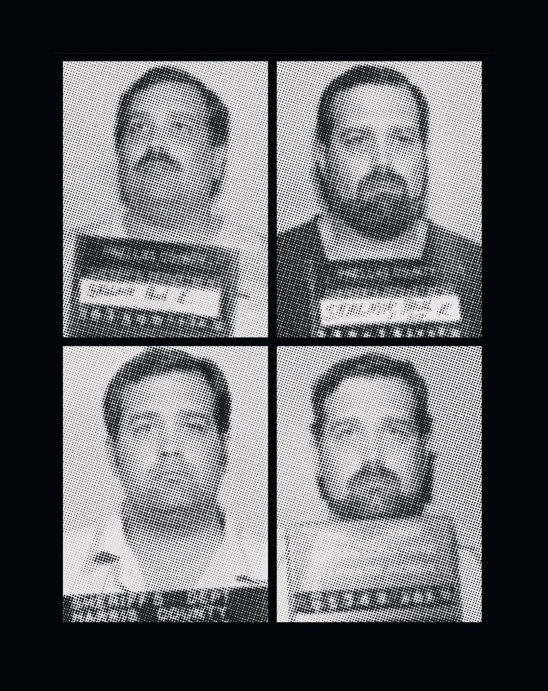

Paul Skalnik is a grifter and criminal. Now a man may be executed because of his dubious testimony. Why did prosecutors rely on him as an informant?.
 By Pamela Colloff Dec. 4, 2019When detective John Halliday paid a visit to the Pinellas County Jail on Dec. 4, 1986, his highest-profile murder case was in trouble. Halliday, who was 35 and investigated homicides for the local sheriff’s office, had spent more than a decade policing Pinellas County, a peninsula edged by white-sugar-sand beaches on Florida’s Gulf Coast, west of Tampa. It is a place that outpaces virtually all other counties in the nation in the number of defendants it has sentenced to death. Prosecutors who pursued the biggest cases there in the 1980s relied on Halliday, who embodied the county’s law-and-order ethos. Powerfully built and 6-foot-4, with a mane of dirty blond hair and a tan mustache, he was skilled at marshaling the facts that prosecutors needed to win convictions
He had worked the case for the past year and a half, ever since the body of a 14-year-old girl named Shelly Boggio was found, nude, floating in an inland waterway near the town of Indian Rocks Beach. Her murder was singular in its violence. Her body bore 31 stab wounds, many of them to her hands, as if she had tried to shield herself from the ferocity of the attack. She was most likely still alive, the medical examiner determined, when she was dragged into the water and left to drown. Her older sister identified her by the silver ring, eagle-shaped and inset with turquoise, that she wore on her left hand
The crime scene yielded few clues. No murder weapon was left behind, and no fingerprints or other forensic evidence was recovered. If Boggio was sexually assaulted, the medical examiner found, any trace of sperm may have been washed away during her time in the water. “It was one of Pinellas County’s cruelest murders,” The St. Petersburg Times observed, “and there was little evidence.
Halliday’s investigation quickly zeroed in on two men, Jack Pearcy and James Dailey, who lived together and were new to Pinellas County. The facts, what few there were, pointed overwhelmingly to Pearcy, a 29-year-old construction worker with a history of arrests for violence against women. Pearcy pursued the teenager before her death, and Pearcy picked her up on the last afternoon of her life, when she was thumbing a ride with her twin sister and a friend. The girls spent the afternoon and evening with Pearcy, Dailey and other housemates, drinking wine coolers and smoking marijuana. After the other two girls went home, Pearcy took Boggio to a beachfront bar, where she was last seen, barefoot and disheveled, around midnight.
Pearcy acknowledged that he drove her to the lovers’ lane along the Intracoastal Waterway where she was killed. But he tried to shift blame to Dailey, claiming that he picked up his housemate before he and Boggio headed down to the water. And while Pearcy admitted to the police that he stabbed Boggio at least once, and he provided details about the crime that were known only to investigators, he insisted that it was Dailey who was the actual killer
This was all that connected Dailey, a 38-year-old itinerant Vietnam veteran, to the crime: the word of its prime suspect. No physical or forensic evidence linked him to the murder, nor did any discernible motive. He would later say he had been asleep in the early-morning hours when Pearcy was out alone with Boggio, only to be awaked by Pearcy, who said he needed to talk; Pearcy drove him to a nearby causeway, where they drank beer and smoked a few joints at the water’s edge. Pearcy’s girlfriend and a longtime friend of Pearcy’s said they saw the two men come home together that morning, hours before Boggio’s body was found, and that Dailey’s jeans were wet
The state attorney’s office in Clearwater pressed forward with the most serious charge it could bring against the men, ensuring that they would be tried for first-degree murder — a crime punishable by death. Pearcy’s trial came first and ended with a guilty verdict in November 1986. But at the penalty phase, the jury recommended that he be sentenced to life in prison. It was a blow to the state attorney’s office, which would argue, in a forceful sentencing memo to the court, that “no evidence exists that Pearcy was not the main actor in this child’s brutal murder.” Pearcy had dodged the electric chair after participating in, and most likely carrying out, one of the county’s most monstrous crimes. Prosecutors had only one more chance to secure a death sentence for Boggio’s murder.
The fate of James Dailey, whose arrest warrant was reported in this 1985 St. Petersburg Times article, has ultimately depended on Paul Skalnik’s word.St. Petersburg Times, via Newspapers.com.
Ten days after the conclusion of Pearcy’s trial, Halliday visited the Pinellas County Jail. At his direction, jailers began pulling inmates who were housed near Dailey out of their cells. One by one, the men were taken to a small, windowless room, where Halliday was waiting. He pressed each man for information. Had Dailey ever talked about his case? Ever admitted to anything?
Four men who were questioned that day testified at a 2018 evidentiary hearing to the same unsettling detail in the interview room. Newspaper articles about Boggio’s murder were laid out conspicuously before them. “I got a very uneasy feeling looking at the newspaper articles,” Michael Sorrentino, one of the four, testified at the hearing. “Had I wanted to say something, or fabricate something, all the tools were there to give them whatever they might be looking for.”
Halliday testified at the hearing that there were no newspapers in the interview room. Either way, no one gave Halliday any useful information that day. In a slender, lined notebook, the detective recorded what each inmate told him. “Nothing,” he jotted down after one interview. After others, he wrote:
Said Dailey denies charge doesn’t know a thing Nothing Knows nothing. Didn’t even know Dailey. stays to himself. Knows nothing. Refused to come to be interviewed.
“Wish I could have helped you but its a little outa my league.”
Halliday’s visit was a bust. But in the Pinellas County Jail, the word was out: The Boggio case needed a snitch.
In jail, it is widely understood that helping prosecutors and the police can earn extraordinary benefits, from reduced sentences to dismissed charges. By the time Dailey’s trial began the following summer in Clearwater, in June 1987, no fewer than three inmates had come forward claiming to have heard Dailey confess to the killing. The first two worked in the jail’s law library, where they professed to have heard Dailey say about the murder, “I’m the one that did it.” They also told the jury of ferrying several handwritten notes between Dailey and Pearcy; in the letters shown to the jury, Dailey appeared eager to appease his co-defendant, whom prosecutors planned to put on the stand. But the two jailhouse informants were eclipsed by a third inmate, who had contacted Halliday to say that he had some information. He told a much more damning story — one that placed Dailey at the scene of the crime and put the knife in his hand. It was exactly what prosecutors needed